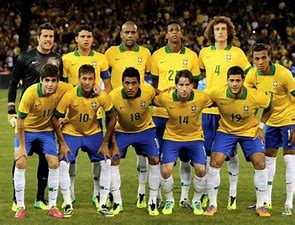

关于足球
足球，世界第一运动，是全球体育界最具影响力的单项体育运动。标准的足球比赛由两队各派11名队员参与，包括10名球员及1名守门员，互相在长方形的草地球场上互相对抗、互相进攻。比赛目的是尽量将足球射入对方的球门内，每射入一球就可以得到一分，当比赛完毕后，得分最多的一队则代表胜出。如果在比赛规定时间内得分相同，则须看比赛章则而定，可以抽签、加时再赛或互射点球（十二码）等形式比赛分高下。足球比赛中除了守门员可以在己方禁区内利用手部接触足球外，球场上每名球员只可以利用手以外的身体其他部分控制足球（开界外球例外）。
2004年初，国际足联(FIFA)确认足球起源于中国，“蹴鞠”是有史料记载的最早的足球活动，《战国策》和《史记》是最早记录蹴鞠的文献典籍。[2] 现代足球则起源于英国，距今已经有200多年的历史了。从1900年的第2届奥运会开始，足球被列为奥运会正式比赛项目（女足比赛于1996年亚特兰大奥运会成为正式比赛项目），但它不允许职业运动员参加。1904年5月21日，国际足联在巴黎成立。1930年起，每4年举办一次世
界杯足球赛，比赛取消了对职业运动员的限制。
足球”一词随着地域与时代不同，用词也不同。在英国，足球称作“football”，该词的使用被FIFA认可。而美式英语中所称的“football”则是指“美式足球”（American football），亦称“美式橄榄球”；“足球”在北美则被称为“Soccer”或者“Futbol”。